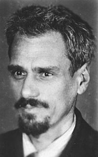

Кондратюк Юрій Васильович
Ю́рій Васи́льович Кондратю́к (справжнє ім'я Шаргей Олександр Гнатович; нар. 9 (21) червня 1897, Полтава, Україна — місце та дата смерті невідомі, не раніше 1942) — український учений-винахідник, один із піонерів ракетної техніки й теорії космічних польотів. Автор так званої «траси Кондратюка», якою подорожували на Місяць космічні кораблі «Аполлон».
Народився в Полтаві. Мати, Людмила Львівна Шаргей (у дівоцтві баронеса[3] Шліпенбах гербу «Шліпенбах»), — викладачка французької мови, батько, Ігнатій Бенедиктович Шаргей, — католицького[3] віросповідання, студент Київського університету. Вихованням маленького Олександра займались його бабуся Катерина Кирилівна і нерідний дід, її другий чоловік Яким Микитович Даценко, син священиків з села Мала Павлівка, колишньої Грунської сотні. У місті Яким Даценко людина відома — колишній земський лікар міста Зінькова, та ще статський радник, який служить у казначействі. Нерідко сам Яким Микитович, один або з Панасом Мирним відправлявся в Полтаві на Малу Садову вулицю, де жив Володимир Галактіонович Короленко. Мати Олександра Шаргея хворіла й не виходила з психіатричної лікарні. Батько Олександра ж, з категорії «вічних студентів», навчався у Німецькій імперії. Олександр Шаргей писав в автобіографічній анкеті про своїх батьків таке: «…меня вырастил неродной дедушка». Після повернення до Російської імперії 1906 року батько, Ігнатій Бенедиктович, забрав із собою сина до столиці імперії Санкт-Петербургу.